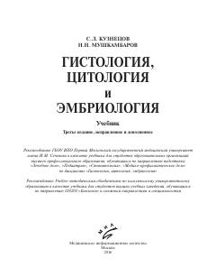

ГЦTibbiyot oliygohlari talabalari uchun gistologiya, sitologiya va embriologiya fanidan asosiy darslik.
Ushbu darslik tibbiyot OTM talabalari uchun mo'ljallangan bo'lib, gistologiya, sitologiya va embriologiya fanlarining fundamental asoslarini o'z ichiga oladi. Kitobda hujayralar tuzilishi, to'qimalar morfologiyasi va mikroskopik tadqiqot texnikalari zamonaviy ilmiy yondashuvlar asosida batafsil yoritilgan.